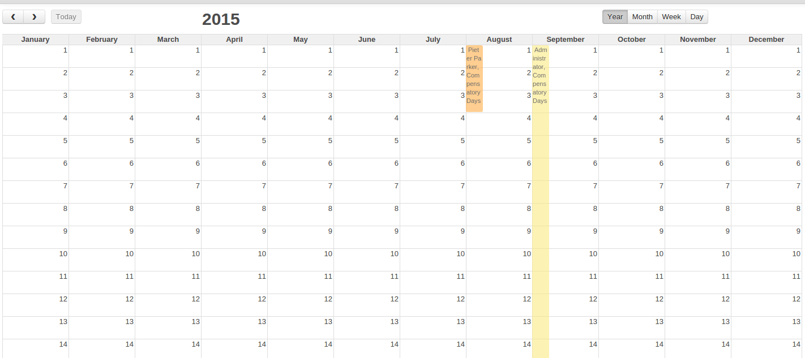

<section class="oe_container">
    <div class="oe_row">
       <h2 class="oe_slogan">Year calendar</h2>
        <h3 class="oe_slogan">Overview throughout the year</h3>
       <div class="oe_span12">
            <p class='oe_mt32'>
                For several planning tasks the month scope is too short. The year overview will give you optimal insight for planning purposes.
                This is especially useful for leave requests, appraisal planning and project task planning.
            </p>
        </div>

        <div class="oe_span12">
            <div class="oe_demo oe_picture oe_screenshot">
                
            </div>
        </div>

    </div>
</section>
